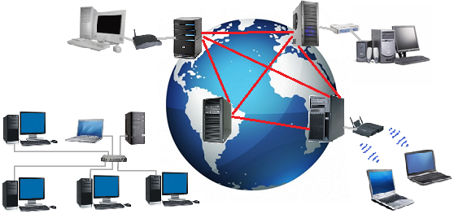
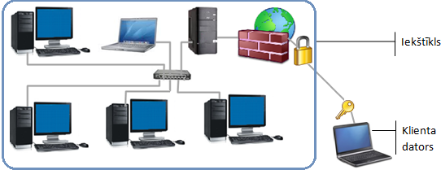

Datortīkli
Datortīkls ir datu pārraides sistēma, kas savieno dažādās vietās esošus datorus. Tīklu veido aparatūra un programmatūra, kas nodrošina tīkla aparatūras funkcionēšanu. Darbs datortīklā lietotājiem sniedz dažādas priekšrocības kā iespēju savstarpēji apmainīties ar informāciju, piemēram, nosūtīt dokumentu citam cilvēkam, kas atrodas tajā pašā ēkā vai pat citā valstī, izmantot kopīgas datu bāzes, kurās var būt apkopota jebkura veida informācija, izmantot koplietošanas diskus, kuros glabājas dati, pie kuriem var piekļūt, piemēram, visi vienas skolas skolēni, iespēju lietot kopīgas perifērijas ierīces, piemēram, printeri, paaugstināt darba efektivitāti, izmantojot jaunās informācijas tehnoloģijas, piemēram, rīkot videokonferences.
Iedalījums
Pēc lieluma
Pēc relatīvā attāluma starp tīkla mezgliem (nodes) datortīklus iedala:
- Lokālais tīkls
- Bezvadu lokālais tīkls
- Teritoriālais tīkls
Avots (Vikipēdija) 